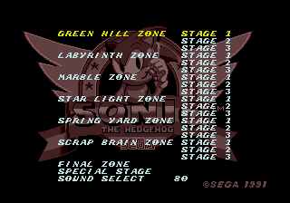

You are listening to: Starlight Zone
*Mega Drive*Sonic the Hedgehog Cheats and Tips

Game Info | Cheat Codes | Music | Boxes | Screenshots |
Walkthrough
Contents
*Level Select*
*Debug Mode*
*Tons of Points*
*Slow Motion*
*Level Select*
At the title screen press up, down, left and right. If done correctly you should have heard a ring. Now hold down A and press Start to select your starting level.
*Debug Mode*
 At the title screen press up, C, down, C, left, C, right, C. Again you should have heard a ring afterwards if done correctly. Next hold A and press Start to continue normal gameplay. You'll notice that the score is screwed up. To turn Sonic into a sprite press B, then scroll through the different sprites of the level you are on by pressing A and place the chosen sprite on the screen by pressing C.
At the title screen press up, C, down, C, left, C, right, C. Again you should have heard a ring afterwards if done correctly. Next hold A and press Start to continue normal gameplay. You'll notice that the score is screwed up. To turn Sonic into a sprite press B, then scroll through the different sprites of the level you are on by pressing A and place the chosen sprite on the screen by pressing C.
*Tons of Points*
First, you need to have Debug mode on, as explained above. Next scroll through the sprites on any level (easiest level to do this is Green Hill Zone) until you come across an easy to defeat enemy (i.e. Chopper-the fish from GHZ). Paste as many of this enemy as possible onto the screen, then transform back into Sonic. Take a run up and spin dash, or do whatever means necessary to destroy all of the enemies on the screen. You'll soon rack up points like never before, and earn tons of lives! The same can be done for rings. Place lots of rings on the screen and let Sonic collect them all. At the end of the act, you'll recieve a very hefty score.
*Slow Motion*
First, you must have Debug mode active, as explained above. Then pause the game and hold the B button. The game will go in Slow Motion.*Send in your cheats, codes and walkthroughs to Dreadknux!*
dreadknux@knuckles.co.uk
Fill in the form!